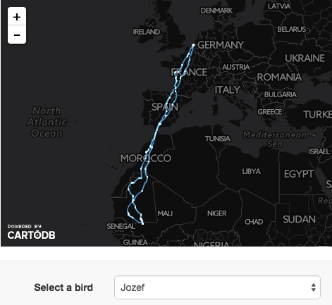

Bird tracking explorer released
We are happy to announce that the second version of our bird tracking explorer was released. The bird tracking explorer allows you to explore the birds that we are tracking in our LifeWatch bird tracking project. You select a bird and view its tracks on the map. The heatmap below the map gives you an idea of the activity of the bird over time. Days when the bird was more active (meaning it travelled more kilometers that day) are darker compared to other days.

While this already gives you an overview of the general activity of and areas visited by the bird, you can dive deeper in the data by clicking on a day or month label of the heatmap. This will cause the map to refresh and only show tracks of the date(s) you selected. Additionally, two charts will be drawn at the bottom of the page. The first one is a more detailed heatmap showing the activity of the bird by hour which allows you to investigate its daily activity. The second one is a line chart that displays the same data for one day.

Two buttons allow you to switch between two different metrics. The first one is the distance travelled which will highlight hours when the bird was active. The second one shows the distance from the birds catch location. This can highlight interesting patterns in the birds behaviour. E.g. the image below shows how gull Eric is travelling to a location at about 70 kilometers distance from his colony in the afternoon for 5 consecutive days (which happened to be a potato chips fabric).

The bird tracking explorer currently contains data from 63 individuals (44 lesser black-backed gulls, 16 herring gulls and 3 western marsh harriers). Depending on the individual, tracks are available from May 2013 until August 2014. That includes the winter period during which certain birds migrate to Africa as is shown for western marsh harrier Jozef below.

Technologies used
The CartoDB SQL API
We have blogged about CartoDB and how we use it to create interactive maps before. Perhaps a less known feature of CartoDB is its SQL API that allows you to query your CartoDB datasets. The API accepts plain SQL statements which gives an enormous flexibility.
For instance, the following query fetches bird metadata from our public bird tracking devices dataset. Note that we can even join multiple CartoDB datasets using the API.
SELECT d.bird_name,
d.catch_location,
d.ring_code,
d.device_info_serial,
d.sex,
d.scientific_name,
d.longitude,
d.latitude,
d.tracking_started_at,
t.start_date,
t.end_date
FROM bird_tracking_devices AS d
INNER JOIN (
SELECT device_info_serial,
min(date_time) AS start_date,
max(date_time) AS end_date
FROM bird_tracking
WHERE userflag IS FALSE
GROUP BY device_info_serial
) AS t ON d.device_info_serial = t.device_info_serial
ORDER BY d.scientific_name, d.bird_name
The SQL API is accessible at https://<your account>.cartodb.com/api/v2/sql and the SQL query should be added with the ?q parameter. The API will return the results of that query as JSON.
The bird tracking explorer uses this API to retrieve the data requested by the user.
JavaScript libraries
We have used a couple of open source JavaScript libraries to render the map and charts and to interact with the CartoDB SQL API.
- jQuery: Used to interact with the SQL API.
- CartoDB.js: This is a CartoDB JavaScript library that lets you create CartoDB maps on the fly in the browser. We use it to build the map and update it when a user selects a new bird or date.
- Cal-Heatmap: This library can render interactive calendar heatmaps.
- C3js: Elegant JavaScript charting library. Both C3js and Cal-heatmap are built on top of D3js.
Explore!
Go ahead and explore the bird tracking data yourself. Developers might want to explore the source code on GitHub. If you have any comments, remarks or suggestions, leave a comment or create an issue.
Comments